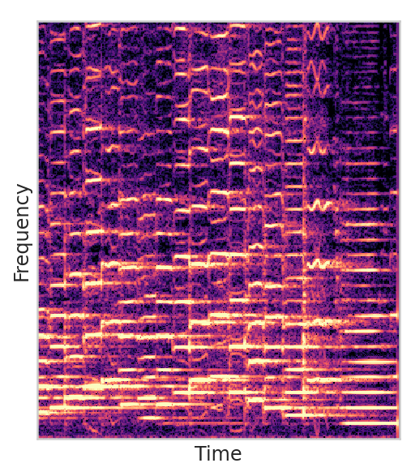
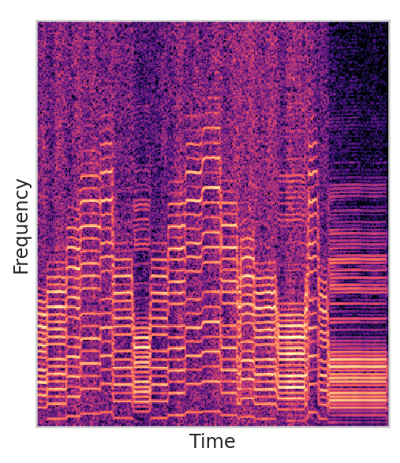
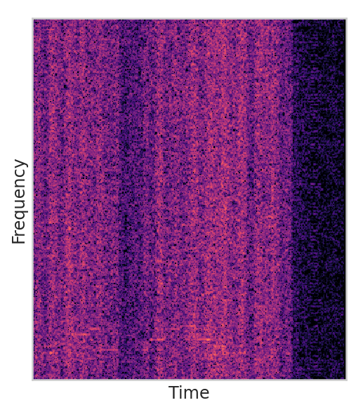
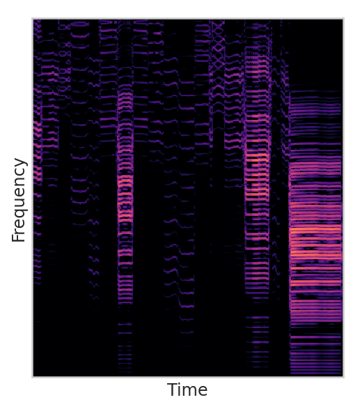
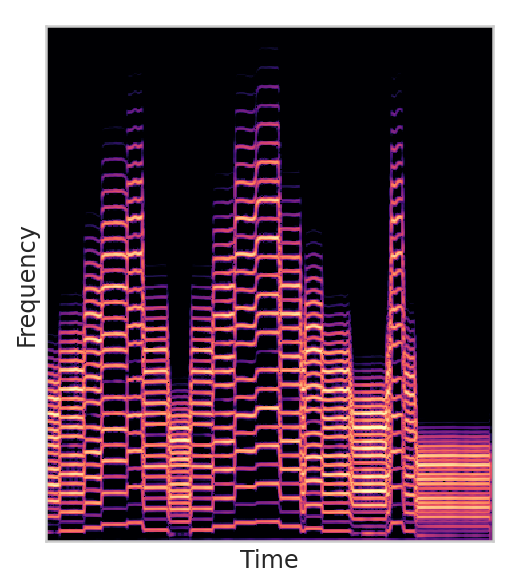

Master Thesis, May 2021
Author: Juan Alonso
Supervisor: Cumhur Erkut
Sound and Music Computing, Aalborg University
Code available at https://github.com/juanalonso/ddsp_fm.
Mult processorSine wave, 440Hz
LFO at 5Hz
LFO at 110Hz
LFO at 5Hz
LFO at 110Hz
Single control point
Multiple control points
Algorithm 1. All the ops in series.
Algorithm 4. Not present in Reface DX.
Algorithm 5. Three modulators in parallel.
Algorithm 6. Simple FM x 2.
Algorithm 8. Not present in Reface DX.
Algorithm 9.
Algorithm 10.
Algorithm 13. One modulator to three carriers.
Algorithm 14. Odd harmonics.
Dexed
Op5 and op6 disbled, flat envelopes.
DDSP-FM
Algorithm 6. Handpicked parameters.
Original
Timbre transfer
Original
Timbre transfer
Original
Timbre transfer
Operator 1
Operator 2
Operator 3
